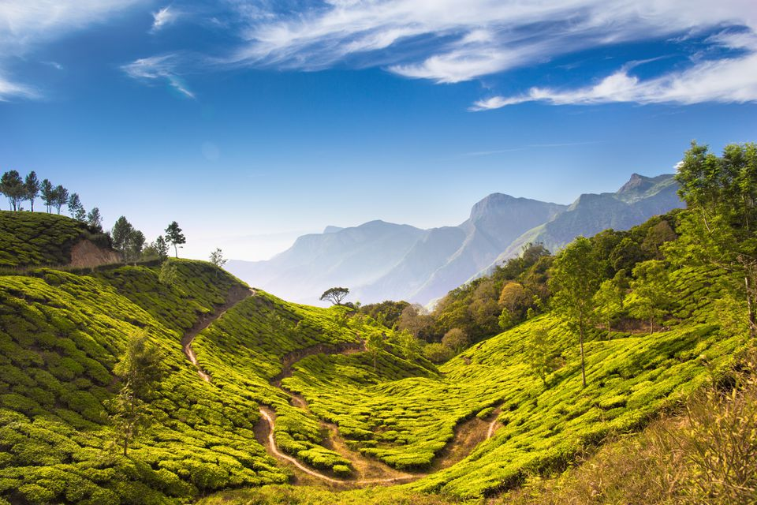

God's Own Country
Kerala, a state on India's tropical Malabar Coast, has nearly 600km of Arabian Sea shoreline. It's known for its palm-lined beaches and backwaters, a network of canals. Inland are the Western Ghats, mountains whose slopes support tea, coffee and spice plantations as well as wildlife. National parks like Eravikulam and Periyar, plus Wayanad and other sanctuaries, are home to elephants, langur monkeys and tigers.

Flip me for details
Exotic Kerela Tour
INR 72,000
- Cochin
- Munnar
- Thekkady
- Kumarakom
- Kanyakumari
- Poovar
This Tours starts with Lunch on Day 1 and ends with Breakfast on Day 11.
Day 1 Arrive Cochin
- Arrive Cochin Station / Airport and reach our hotel directly (Hotel Check/in:- 12:00 noon)& rest the of the day is free for rest / shopping. Night halt at Cochin.
Day 2 Cochin - Munnar
- After breakfast visit Dutch Palace, St. Francis Church and Chinese Fishing Nets. After lunch proceed to Munnar (5-6 hrs. journeys), en route visit the famous waterfalls. Night halt at Munnar.
Day 3 Munnar
- After breakfast visit Metupatty Dam for Speed boating & Coconut Water (at our cost) and Rose Garden. After lunch visit Hydel Park. Night halt at Munnar.
Day 4 Munnar
- After breakfast visit Rajmala view point the highest point of Kerala. After lunch the day is free to explore the natural beauty of Munnar. Night halt at Munnar.
Day 5 Munnar - Thekkady
- After breakfast proceed to Thekkady (5 hrs. journey), en route visit the Tea Gardens of Munnar. Arrive Thekkady and check-in at hotel. In the evening take a guided Spice Plantation tour and enjoy Kerala Traditional Kathakali show (at our Cost).Night halt at Thekkady.
Day 6 Thekkady - Kumarakom
- After breakfast enjoy boating at Periyar Lake OR Jeep Safari (at your own cost) / shopping etc. After lunch proceed to Kumarakom (6 hrs. journey). Night halt at Kumarakom.
Day 7 Kumarakom
- After breakfast morning free to enjoy resort facilities. After lunch enjoy Kerala's famous back waters ride for 3 hrs (at our Cost).. Night halt at Kumarakom.
Day 8 Kumarakom - Kanyakumari
- After breakfast proceed to Kanyakumari (10 hrs. journey). In the evening sightseeing tour of Kanyakumari which includes Gandhi Mandap, Triveni Sangam Ghat and Sunset Point. Night halt at Kanyakumari.
Day 9 Kanyakumari - Poovar Island
- Morning view the Sunrise from the hotel Terrace. After breakfast visit to Vivekananda Rock Memorial (Special Pass by Heena).After lunch proceed to Poovar (3 hrs. journey). Evening is free at leisure. Night halt at Poovar Island.
Day 10 Poovar Island - Trivandrum - Poovar Island
- After breakfast visit to Padmanabh Swamy Temple & Kovalam Beach. After lunch enjoy at beach. Night halt at Poovar Island.
Day 11 Train Journey
- After breakfast transfer to Trivandrum railway station / Airport to board your train / Flight for Mumbai ( flight to be booked after 11.00 a.m ) with memorable experience of the tour conducted by Meraki.
This Tours starts with Lunch on Day 1 and ends with Breakfast on Day 11.
Day 1 Arrive Cochin
- Arrive Cochin Station / Airport and reach our hotel directly (Hotel Check/in:- 12:00 noon)& rest the of the day is free for rest / shopping. Night halt at Cochin.
Day 2 Cochin - Munnar
- After breakfast visit Dutch Palace, St. Francis Church and Chinese Fishing Nets. After lunch proceed to Munnar (5-6 hrs. journeys), en route visit the famous waterfalls. Night halt at Munnar.
Day 3 Munnar
- After breakfast visit Metupatty Dam for Speed boating & Coconut Water (at our cost) and Rose Garden. After lunch visit Hydel Park. Night halt at Munnar.
Day 4 Munnar
- After breakfast visit Rajmala view point the highest point of Kerala. After lunch the day is free to explore the natural beauty of Munnar. Night halt at Munnar.
Day 5 Munnar - Thekkady
- After breakfast proceed to Thekkady (5 hrs. journey), en route visit the Tea Gardens of Munnar. Arrive Thekkady and check-in at hotel. In the evening take a guided Spice Plantation tour and enjoy Kerala Traditional Kathakali show (at our Cost).Night halt at Thekkady.
Day 6 Thekkady - Kumarakom
- After breakfast enjoy boating at Periyar Lake OR Jeep Safari (at your own cost) / shopping etc. After lunch proceed to Kumarakom (6 hrs. journey). Night halt at Kumarakom.
Day 7 Kumarakom
- After breakfast morning free to enjoy resort facilities. After lunch enjoy Kerala's famous back waters ride for 3 hrs (at our Cost).. Night halt at Kumarakom.
Day 8 Kumarakom - Kanyakumari
- After breakfast proceed to Kanyakumari (10 hrs. journey). In the evening sightseeing tour of Kanyakumari which includes Gandhi Mandap, Triveni Sangam Ghat and Sunset Point. Night halt at Kanyakumari.
Day 9 Kanyakumari - Poovar Island
- Morning view the Sunrise from the hotel Terrace. After breakfast visit to Vivekananda Rock Memorial (Special Pass by Heena).After lunch proceed to Poovar (3 hrs. journey). Evening is free at leisure. Night halt at Poovar Island.
Day 10 Poovar Island - Trivandrum - Poovar Island
- After breakfast visit to Padmanabh Swamy Temple & Kovalam Beach. After lunch enjoy at beach. Night halt at Poovar Island.
Day 11 Train Journey
- After breakfast transfer to Trivandrum railway station / Airport to board your train / Flight for Mumbai ( flight to be booked after 11.00 a.m ) with memorable experience of the tour conducted by Meraki.